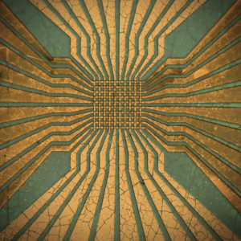
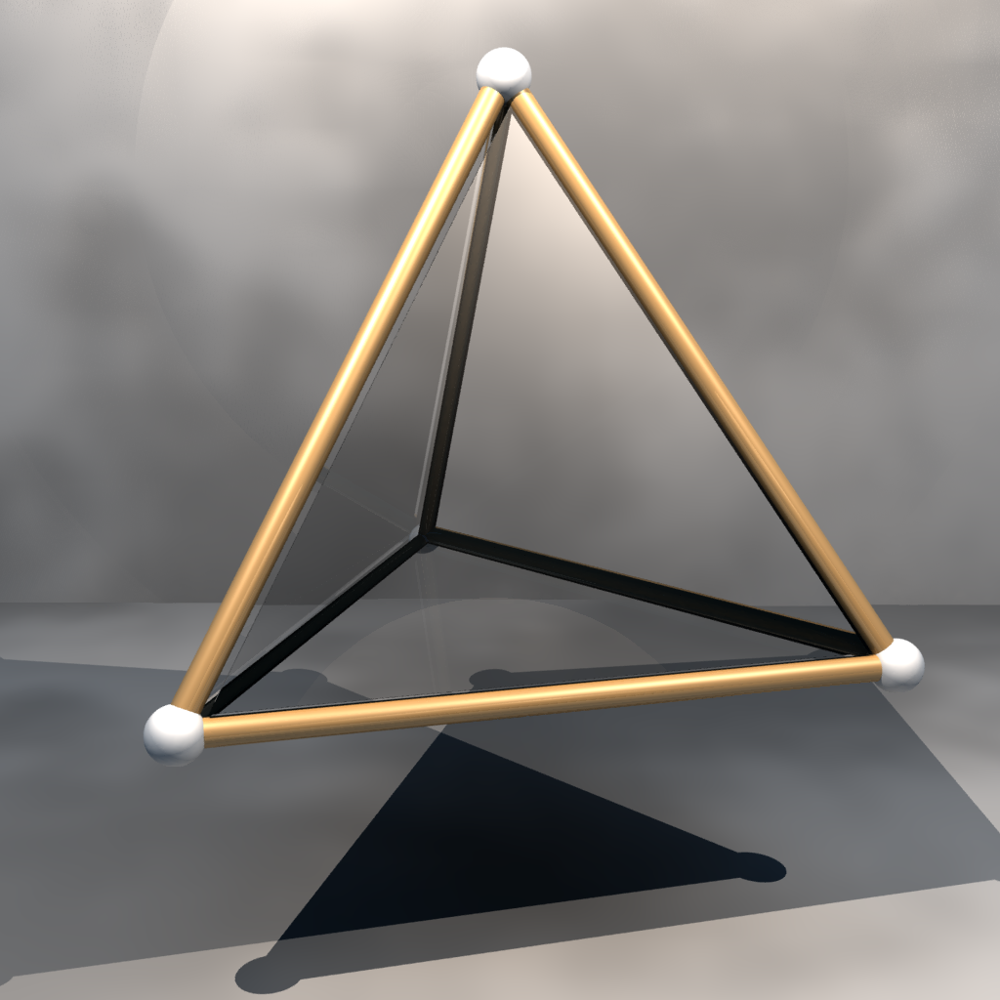

Hi There!

MSE PhD Candidate @ UT Austin | MatSci @ MIT 2021
I'm a Ph.D. candidate in materials science and engineering and a Cockrell School of Engineering fellow in the Texas Materials Institute at UT Austin. I work with Prof. Deji Akinwande on 2D-materials for neuromorphic computing applications.
Right now, I'm a DoE SCGSR fellow hosted by Oak Ridge National Lab working at the Center for Nanophase Materials Sciences with the Scanning Tunnelling Microscopy group. Feel free to look around and if anything catches your eye, or you think we could work together, please reach out.

